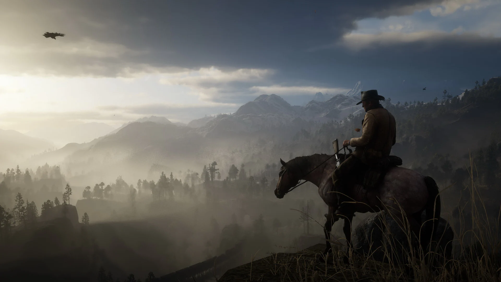
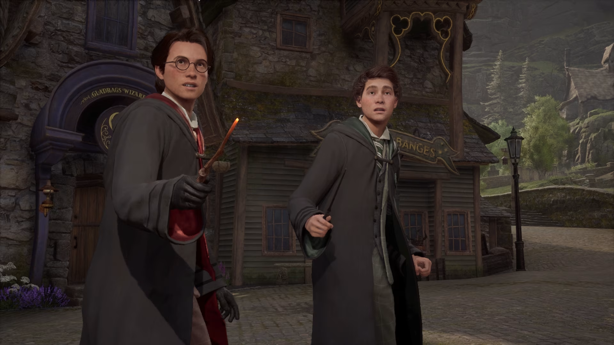

Red Dead Redemption 2
Simplesmente uma obra-prima. Atmosfera, os personagens e a história são incríveis. É um jogo que fica com você depois que termina.
24
182

Simplesmente uma obra-prima. Atmosfera, os personagens e a história são incríveis. É um jogo que fica com você depois que termina.

O mundo é lindo e a jogabilidade é fluida. Sinto falta de mais profundidade nas missões secundárias, mas ainda assim vale muito a pena.
Rejogando agora e continua sendo uma das experiências mais marcantes dos games. A história e os personagens são absurdos.